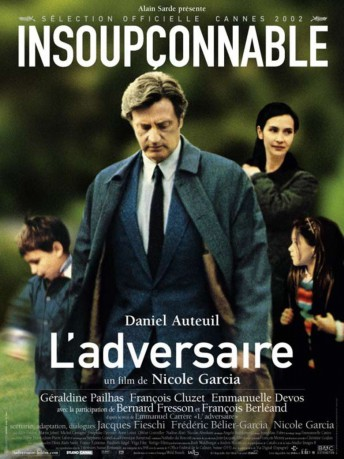

#3997 Ein Perfektes Leben
Alternativ: The Adversary (Englischer Titel)
 
 IMDB-Wertung: 6.9 / 10
IMDB-Wertung: 6.9 / 10  Metascore: 0
Metascore: 0 
Eine Familientragödie: Im Januar 1993 tötete Jean-Claude Romand seine Frau, seine beiden Kinder und seine Eltern und versuchte anschließend vergeblich, sein eigenes Leben zu beenden. Die Ermittlungen ergaben, dass er sich über viele Jahre in ein Lügengerüst verstrickt hatte, das zusammenzubrechen drohte. War der Entschluss des Familienvaters ein Akt der Verzweiflung, ein versuchter Befreiungsschlag? Nicole Garcia adaptierte Emmanuel Carrères im Original gleichnamigen (‘L’Adversaire’) Tatsachenbericht ‘Amok’.
Jahr: 2002
Dauer: 122 Minuten
FSK:
Land: Frankreich Studio: Alfa FilmsTonspuren:
Untertitel:
Auflösung: 720p (1280x720) Größe: 3512 MB
Genre: Thriller, Drama, Krimi, Mystery
Regisseur: Nicole Garcia
Drehbuch: Salvatore Laurani
Soundtrack:
Darsteller:
 Daniel Auteuil als Jean-Marc Faure
Daniel Auteuil als Jean-Marc Faure Géraldine Pailhas als Christine Faure
Géraldine Pailhas als Christine Faure François Cluzet als Luc
François Cluzet als Luc Emmanuelle Devos als Marianne
Emmanuelle Devos als Marianne François Berléand als Rémi
François Berléand als Rémi- Roberto Bestazzoni als
- Corentin Daumas als Child
- Alice Fauvet als Alice
- Martin Jobert als Vincent
- Michel Cassagne als Le père de Jean-Marc
- Joséphine Derenne als La mère de Jean-Marc
 Anne Loiret als Cécile
Anne Loiret als Cécile- Olivier Cruveiller als Jean-Jacques
- Nadine Alari als La mère de Christine
- Nicolas Abraham als Xavier
 Bernard Fresson als Le père de Christine
Bernard Fresson als Le père de Christine- Muriel Amat als
- Arié Arichi als
- Humbert Balsan als Dr. Michel Philippot
- Marie Barronet als
- Anne Benoît als
- Sibylle Blanc als
- Sylvie Blotnikas als
- Patricia Bopp als
- Catherine Chevallier als
- Paola Comis als
- Maimouna Coulibaly als
- Catherine Epars als
- François Germond als
- Arnaud Guenet als
- Valérie Kéruzoré als
- Jean-Claude Leguay als Le magistrat à la déposition
- Judith Marouani als
- Bernard Nissile als
- Christian Pageault als
- Hubert Saint-Macary als Dr. Lantier
- Ian Smith als
- Marc Tissot als
- Théodule Carré-Cassaigne als Child
- Zéphirin Carré-Cassaigne als Child
- Zoé Carré-Cassaigne als Child
- Florent Delaunoy als Child
- Romain Dreyfus als Child
- Augustin Jacquet als Child
- Audrey Lavirotte als Child
- Aristide Renting als Child
- Isidore Renting als Child
- Pippa Schallier als Child
- Fanny Winter als Child
Datei: X:\2002\Perfektes Leben, Ein (2002, FSK, 1280x720).mkv seit 11.07.2016
Festplatte: HD 1996-2002
 Es gibt insgesamt 93 Filme in der Gruppe '2002'
Es gibt insgesamt 93 Filme in der Gruppe '2002'